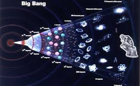
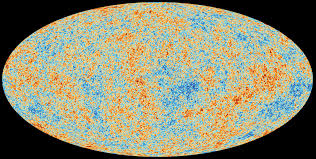

What is The Big Bang Theory?
According to the Big Bang Theory, the universe started as a single, dense, endlessly hot point, called the Singularity that expanded and stretched over 13.7 billion years.  The expansion is visible to astronomers through the cosmic microwave background. Some theorists provide alternate explanations, such as perpetual inflation or an oscillating universe, but the majority accept the idea.
How do we know The Big Bang happened?
Scientists have discovered that distant galaxies are accelerating away from our Milky Way, a phenomenon attributed to a cataclysmic event similar to the Big Bang. This discovery highlights the intricate interplay of cosmic forces that have shaped the universe over billions of years. As scientists explore this galactic motion, they aim to unravel the underlying mechanisms and physical laws, broadening our understanding of the cosmos and revealing the beauty and complexity of the universe.
How does Cosmic Microwave Background Radiation support The Big bang Theory?
The cooled residue of the first light to freely move throughout the Universe, which was discharged shortly after the Big Bang, is known as the Cosmic Microwave Background (CMB).  It is regarded by scientists as a Big Bang shockwave or echo. When Penzias and Wilson registered a signal in their radio telescope in 1965 that could not be directly linked to any specific source in the sky, they made the accidental discovery of the CMB. The 'Big Bang' theory, which postulated that the'shockwave' of the primordial explosion would be discernible as a faint 'wallpaper' behind all galaxies, quasars, and galaxy clusters, was confirmed by this observation. The evidence is apparent as a radio signal with a temperature of 2.7K and is thought to be the cooled afterglow of the Big Bang.